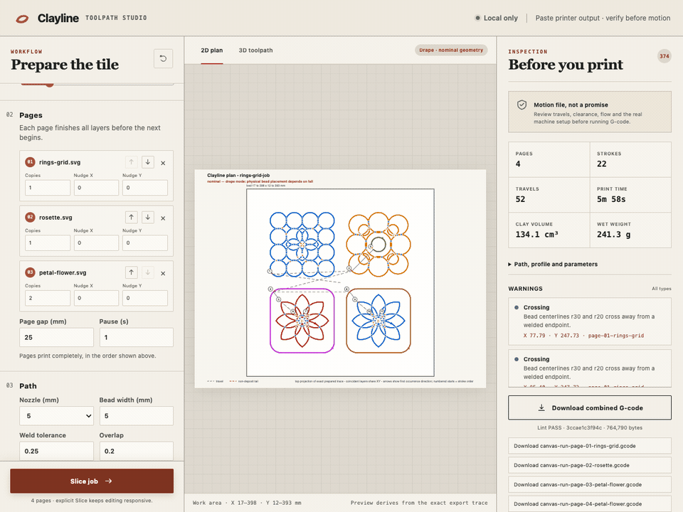

Clayline
Drawings and 3D models in. Print files for clay paste printers out.
Download for MacFor Apple silicon Macs running macOS 14 or later. Unzip it, then drag Clayline into your Applications folder. Free and open source.

What it does
- Tiles mode: draw a pattern as lines in any vector drawing app, save it as an SVG, and Clayline turns it into one continuous coil per layer, joining lines where they meet, hopping across touching loops, and laying out several tiles across the bed.
- Weave mode: open a 3D model of a tumbler or vessel, and Clayline turns it into a single unbroken thread of clay, with control over ribs, interior walls, and which part of the form to print.
- Drape or layer by layer: keep the nozzle high and let the coil fall into place, or print layer by layer at heights you set.
- Checked output: every file is checked against your printer's limits before you see it, and the top of the file records every setting the job used.
Built for the PotterBot 10 XL and shaped around real prints. Everything runs on your Mac: no account, no cloud, no internet connection needed.
Printer files move real machinery. Clayline checks each file against the printer's limits, not against your actual printer, clay, nozzle, or the space around it. Look the file over, keep the emergency stop within reach, and stay with the printer.
Open source
Clayline is open source. The code is at github.com/peterkatz/clayline, and that is also the place to report a problem or offer an improvement. People who contribute code agree to a short contributor agreement described there.